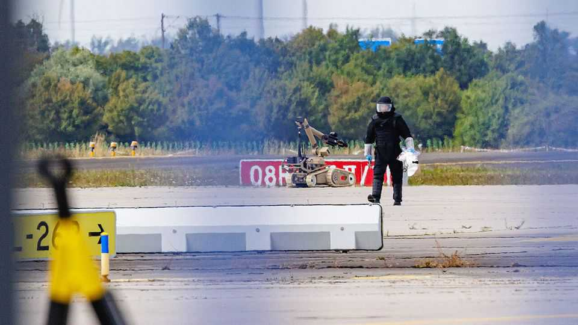

Europe must do more to guard its airports from Russian drones
The Leipzig attack shows the danger of Russian-style hybrid warfare

Aug 13th 2026
On the evening of August 4th Leipzig-Halle Airport in Germany came close to disaster. A drone carrying 800 grams of plastic explosives was flown into the wing of a fully fuelled Ukrainian Antonov An-124, but the bomb fell off the drone instead of detonating. Had it done so, the giant transport plane, used by Ukraine and NATO to carry military loads, would have gone up in a fireball, as would a second An-124 parked next to it.
The drone, an FPV-style quadcopter, had been caught on camera entering the perimeter hours earlier. But no one noticed it until morning, when a bus driver spotted it, held it down with his foot and raised the alarm. The significance of the attempted attack for the future of airport security can hardly be exaggerated, says Charlie Edwards of the International Institute for Strategic Studies, who co-authored a report last month on Russia’s drone campaign against Europe.
It was a brazen escalation over last year’s wave of reconnaissance and disruption drones around the continent. Leipzig-Halle is a big logistics hub for NATO and Ukraine. An attack with an armed drone is less hybrid warfare than warfare, full stop. Germany has not formally attributed it to Russia. But sources believe it soon will.
Unlike other infringing drones, such as two big Chinese-made ones that overflew a Patriot missile facility in Germany two days later, the one in Leipzig was captured, providing a trove of evidence. Investigators say it is military-grade and suggest a state-linked actor built it. Rather than radio control, which airport sensors might have picked up, it used SIM cards and 5G antennas, like an ordinary mobile phone. Nico Lange, a former chief of staff at the German defence ministry, says its construction “reflected the design of Russian drones used in Ukraine”.
After its discovery, a Boeing 757 collided with something at an altitude of 400 metres, possibly a spotter or repeater drone. Investigators reportedly found DNA traces on the captured drone linked to a failed attack in 2024, when parcel bombs exploded before being loaded aboard freight aircraft. That plot has been attributed to the GRU, a Russian spy service.
Germany must take emergency action, argues Mr Lange. It should deploy multilayered detection systems at the country’s main airports by the end of August. These would combine radars that can pick up unique motion patterns, software to detect anomalies on mobile networks, cameras to track targets and thermal and acoustic sensors. Eight German airports are already due to get such enhanced capabilities, but at a slower pace.
The Ukraine war has accelerated the development of drones that defy detection. They use frequency-hopping, encryption, fibre-optic cables and greater autonomy to baffle defences. Even with state-of-the-art detection systems, busy airports will be hard to defend. Weather, bird activity, background noise and dense infrastructure all help drones to hide.
After identifying a drone, the problem is what to do about it. Jamming it could disrupt the communications of commercial aircraft. Intercepting it could create debris that might damage aircraft or injure people. Shooting it down to avoid catastrophe may be the right thing to do. But without clear protocols, anti-drone teams may err on the side of caution.
Leipzig got lucky. Europe’s airports have had a nasty warning. Even with stronger defences, the threat will not disappear. In this sort of warfare, even an attack that seems to fail may succeed in sowing anxiety and confusion.■